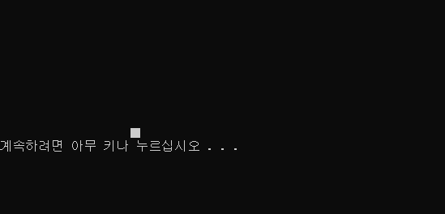

[C언어] 좌표계-gotoxy()함수
1. include windows.h
cmd 콘솔 환경에서 좌표를 찍기 위해서는 SetConsoleCursorPosition 함수와 COORD 구조체를 필요로 합니다.
따라서 기본적으로 Windows.h를 include 해줘야 합니다.
COORD의 구조체 멤버 X, Y는 cmd 화면 상의 좌표를 의미합니다.
while문을 사용해 (x,y) 한 쌍의 좌표값을 입력하면 그 위치에 ■를 출력하는 코드를 만들어 보도록 하겠습니다.
2. gotoxy() 함수 만들기
- #include <stdio.h>
- #include <windows.h>
- void gotoxy(int x, int y)
- {
- COORD Cd;
- Cd.X=x;
- Cd.Y=y;
- SetConsoleCursorPosition(GetStdHandle(STD_OUTPUT_HANDLE), Cd);
- }
- int main()
- {
- int x, y;
- while(1)
- {
- printf("Input x,y : ");
- scanf("%d,%d",&x, &y);
- system("cls");
- gotoxy(x, y);
- printf("■\n");
- system("pause");
- system("cls");
- }
- }
저는 COORD 구조체를 구조체변수 Cd로 선언했습니다.
Cd.X와 Cd.Y의 X와 Y는 COORD의 멤버변수로 Short 자료형을 가지고 있습니다. SetConsoleCursorPosition 함수를 사용하면 커서가 화면상의 입력한 좌표(x,y)로 이동하게 됩니다.
위에 코드를 컴파일한 모습입니다. 저는 0,0 좌표를 입력해줬습니다.
해당 좌표에 ■를 출력하게 설정했습니다. (0,0)좌표에 ■가 찍힌 것을 확인할 수 있습니다.

이제 (10,10)좌표를 입력해 주었습니다. 그런데 x축과 y축의 거리가 같지 않습니다. 이러한 이유는 cmd의 알파벳 크기는 0.5이기 때문입니다.따라서 x축이 y축보다 1/2만큼 차이가 나게 됩니다.
x의 값에 *2를 추가로 작성해주면 거리가 같아질 것입니다.

보이는 것과 같이 (x*2,y)을 입력한 결과, x축과 y축 모두 같은 거리만큼 떨어져 있게 됐습니다.
3. 화면 지우기 & 업데이트 하기
이제 그렸던 ■를 다시 지우는 방법에 대해 알아보겠습니다.
지우는 방법은 간단합니다. printf("■"); 부분을 printf(" "); 으로 바꿔주면 해당 좌표에 출력된 문자를 " "로 교체됩니다.
위에 방법은 해당 좌표의 값을 지우는 방법이지만 화면 전체를 초기화하여 업데이트해야 할 때가 있습니다.
위에 코드에서도 쓰였지만 system("cls");를 사용하면 화면 전체가 지워지게 됩니다. system()함수는 cmd에서 사용되는 명령어로 Windows Batch에서 더 다루도록 하겠습니다.
이렇게 하면 화면에 원하는 문자를 쓰고 지우는 것이 가능해졌습니다. 이제 간단한 게임을 만들 수 있는 조건 하나를 가지게 되었습니다.
소스파일
gotoxy.cpp